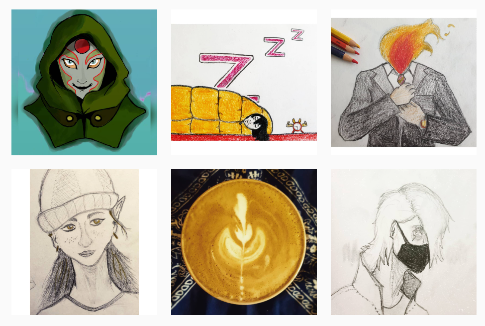
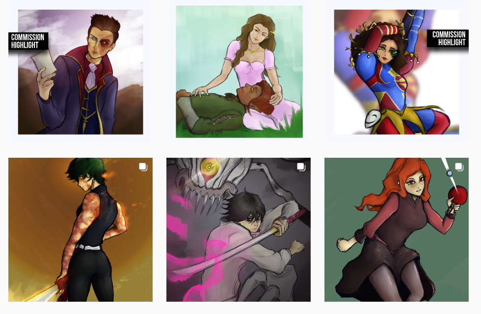
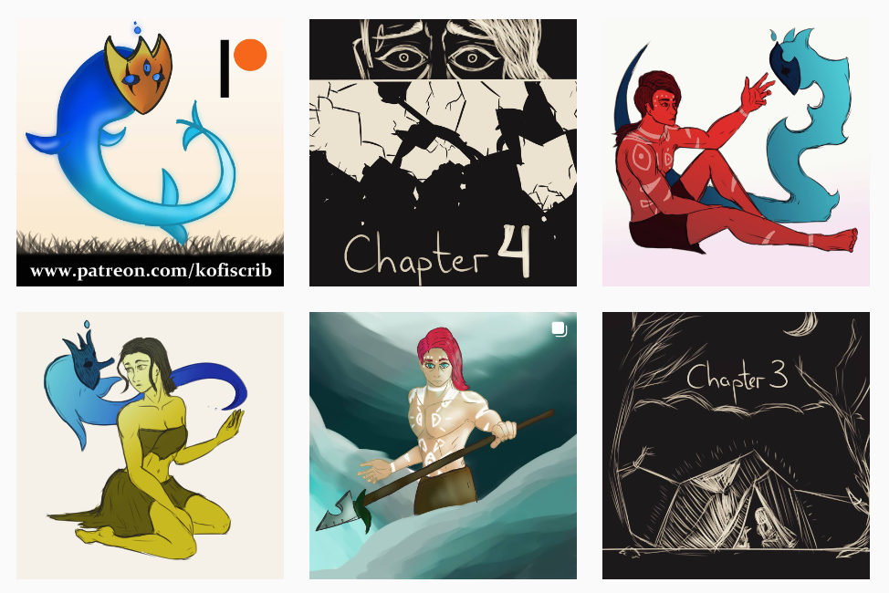

How I Landed my First 100 Clients as an Artist 🪂

In March 2020, I was a newbie content creator with $0 made in sales.
Just a bit more than a year later, I had already worked with 100+ clients on digital illustrations.
In this article, I will go over the steps I took to ensure myself some publicity, and how I managed to persuade so many people to work with an inexperienced artist.
Seeing what works
You would think that a digital artist can simply charge hundreds of dollars for their work and people would gladly pay because it’s art.
Maybe, but only if you’re somewhat capable as an artist.
In the beginning, I was far from it.
My idea for “digital art” was to draw something on paper and take a picture of it. Here’s an example or two.
Of course, that didn’t exactly reach the right audience. I needed to transition to proper digital art.
In the following weeks and months, I drew for 6+ hours a day, almost every day, in order to get better.
And soon enough, people started to notice, there was now some amount of value in my art-style. See some of my more recent works for reference:
And still, it would have amounted to nothing if I just started posting when I felt “ready”. I took the approach of posting all the works I did, good or bad, on a schedule, no matter the reaction I received.
I was also promoting said content on every social media channel I could think of. I was on Instagram, Reddit, Tumblr, Twitter, I had a Patreon, a Ko-Fi account, I also made my own website a bit later (kofiscrib.com).
Key point: You never know what works until you try it - so see what works and then do it again.
Distinguishing yourself
So, while I was on all those different social media channels, I realised something:
“There are so many people who draw the same and better than me.”
At the time as well, that was an obvious statement. And even today, I would not deem that I am among the best digital illustrators there are, far from it.
And yet, for a person to choose you to work for them on a project, you have to be able to distinguish yourself somehow.
This is where I figured it out - my style may not be the best there is, but that doesn’t matter too much. It’s the content that people will flock towards.
I added a bit of my personality wherever I could, I drew genuine stories and characters from my imagination that some people seemed to resonate with. The truth is, they liked the characters and stories mainly because they saw they were genuine and original - the rest was a matter of taste.
Key point: Be unique, and be yourself, when doing art. The rest will follow naturally.
Not being afraid to ask
For 2 months straight, I was drawing without funding.
Nobody cared enough to purchase a custom piece from me. And understandably so:
- I had no social approval or testimonials
- My art-style was quite rough and unpolished
- I was very inexperienced in marketing overall
My first dollar online actually came when I asked for it. I saw a person who was commissioning people online to draw for them, and I hit their DMs. Worst thing that could happen, they say no. But imagine my joy when they accepted my offer and paid me $3 to draw them something small.
I know, I’m a master of sales.
Now, $3 was nothing even back then before inflation was hitting hard, but it was the proof of work that mattered.
My drawings were apparently valuable enough to be exchanged for a price. Yes, a low price, in the beginning, but it was surely a start. I figured I’d start charging something more reasonable from now on, keep asking people whether they were interested in my art, and slowly raise my prices over the months.
This is how, 2 years into this creative endeavour, I had made ~$6,000. Yes, at such a big timescale it seems little to me, and probably you, but for somebody who was making 0 money online beforehand, this magic Internet money felt better than anything.
Key point: don’t be afraid to ask. People sometimes don’t know what you’re offering and how much it could help them. It’s your job to promote, and theirs to either accept or decline.
Knowing your audience
And lastly, the most important step for finding your audience is to know where to look for it.
As artists, we may think that all social media is the same and we’ll be treated the same - that’s not true. Musicians can’t utilise the visual aspect of Instagram as well as digital artists, and digital artists can’t grown on platforms like Soundcloud, Spotify, and even YouTube requires extra steps to make viable.
So when I was approaching an audience in the beginning of 2020, I had an idea in mind - since I was drawing in an anime-inspired style, why not go on Tumblr and see whether I get traction there?
And lo and behold, I got pleasantly surprised - people on there were liking what I posted and were much more willing to ask for a commission (many people want anime art of their original characters, I found out). Similarly on Instagram, at first I wasn’t growing because I was just posting into the void. Then at one point I decided to start doing drawing challenges there and quickly found other people doing the same.
The point is, your audience is out there, and they won’t need a lot of reassuring to start liking you - you just need to find where they scroll.